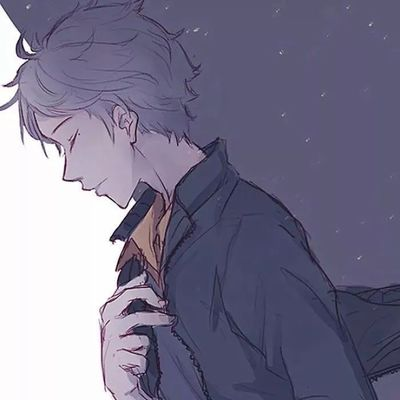
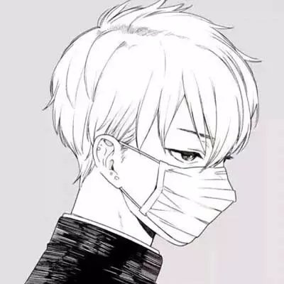

欢迎光临我的博客主页
基本信息：
院系：媒体工程学院软件工程二班
学号：190808236 姓名：张华 籍贯：宁夏固原 兴趣爱好：音乐.电影.游戏.阅读
备注：还是单身wuwuwu...
关于我
出生地：宁夏固原
出生年月：2001年6月7日
专业：软件工程
学习单位：浙江传媒学院
入学时间：2019年9月6日
所在班级：19软工二班
职位：宣传委员
最喜欢的课程：体育
日志
日志
那些年，自己书写的伤感文字 1、真正的牛叉不是你在风光的时候和过多少人花钱，而是在你落魄的时候还有多少人会给你钱花。 2、多少人的梦想都跟放屁一样，总希望能放一次香的来炫耀一下自己，但结果还是和原来的一样臭。 3、感情就像一块砖头，一旦破碎了，就算能掇补回来，始终也会有裂痕。 4、我 重阳节情思（诗词一组） 重阳节情思（一组诗词） 文/苗青 七绝。重九登高 重九登高学古贤，和风带袖拨清泉。 吟诗品酒花开处，老有童心羡若仙。 七绝·咏重阳 西风送爽又重阳，篱外金英带露香。 把酒诚邀天上月，浅怀离绪咏心章。 七绝。重阳感赋 （一） 菊桂争香气爽天，鱼肥果硕兆丰年。 南 家和万事兴 擦干眼泪 吸取教训 躲起来 你要记住 找个没人的地方哭 他是儿子 你是女儿 不要纠结所谓的自尊 你是要嫁出去的赔钱货 不要再向往她们的生活了 是泼出去的水 学了这么多年历史 是一个不能帮他们养老的女儿 你该明白 他是儿子 思想这种东西 是传宗接代的宝 是根深蒂固的 怎么可能不孤独 看到一句话，只有上帝和野兽才不孤独。可是我不可能是上帝，刚好又该死的比野兽多了七情 六欲。 学校放国庆，寝室里两个人回家，我和另外一个人在寝室过着肥宅的颓废生活，每天都是中午 起床，一天只吃一顿，大部分时间都在床上，看小说，看别人的人生，看着别人的痛苦 世界就是那么的奇妙，原本我们是行走在两条平行线上的人，却不知道是从那一眼我发现自己居然爱上了你。也许是因为我们有着相似的感情经历，也许是我从你的身上看到了自己的影子，也许还有很多的也许在其中，让我在不知不觉的时候爱上了你。 而这一切都要从我那天的情感 原创作者——剪剪花 来到日本这个高科技现代化的城市京都，没想到这里深藏这一个浓郁日本风情的祗园，穿过八坂神社的马路仿佛穿越了时空来到了祗园的花间小路这里是日本古老的艺伎花街…… 我们踩着青石板的街道，两边是低矮的木板房，黄色木条的大门、木条的围墙、木 我身为父母长女，婚姻事皆有父母所令。我与他相识，略有报恩成分在内，无奈才嫁入他家。 人生在世有苦有甜，这段姻缘毫无情分。在那贫困的日子里喜少忧多，恼、恨、愁伴行，无人分忧，无处诉苦，只有忍气吞声熬日子。 彼此在婚姻中的生活习惯、性格方面差异越来越明显
作品
作品
emm，这个人比较懒，什么都没有留下/（O.O）/!!!
相册
相册


联系